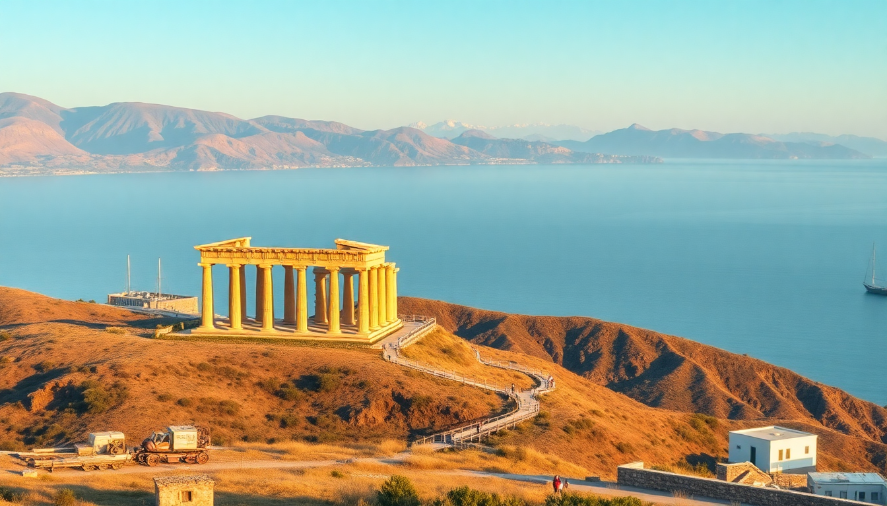

Best Day Trips from Athens: Delphi, Sounion, Hydra

I’ve spent enough weekends in Athens to know that the city’s energy is addictive, but after three days of souvlaki and Acropolis queues, you need a break. Over the past year, I took three different day trips—Delphi, Cape Sounion, and Hydra—and each felt like a completely different version of Greece. Here’s what actually worked, what didn’t, and where I’d send a friend.
Why take a day trip from Athens instead of staying in the city?
Athens is loud, dusty, and relentless. A day trip gives you breathing room. You get ancient ruins without the scaffolding, sea views without the smog, and island charm without the ferry nightmare of a multi-day commitment. I found that even a single day away resets your patience for Athens’ chaos. Plus, the contrast makes you appreciate both more.
What’s the best way to visit Delphi in one day?
I booked a spot on a small-group tour that left from Syntagma Square at 8 a.m., and it was the right call. Driving yourself is doable but exhausting—two and a half hours each way on winding roads. The bus let me nap and skip the parking headache.
The site itself is smaller than you’d expect, but the setting is staggering. You walk the Sacred Way past the Treasury of the Athenians, then climb to the Temple of Apollo. The stadium at the top is mostly rubble, but the view down the valley to the Gulf of Corinth makes the hike worth it.
- Stop at Arachova on the way back—a ski-town-adjacent village with wool shops and decent coffee at Kafeneion O Yannis.
- Eat at Taverna To Patriko Mas in Delphi town—their moussaka is heavy but honest, and the terrace looks straight into the olive groves.
- Skip the Delphi Archaeological Museum if you’re short on time; the highlights (Charioteer, Antinous) are impressive but the main site tells the story better.
- Wear proper shoes—the marble paths are polished smooth by centuries of feet and get slippery.
Is Cape Sounion worth the drive just for a sunset?
Yes, but only if you time it right. I drove out on a Tuesday in late September, left Athens around 3 p.m., and reached the Temple of Poseidon by 4:30. That gave me an hour to wander the headland before the crowds thickened. The temple itself is a skeleton—just 15 of the original 34 columns remain—but the location is the point. You’re on a cliff at the southern tip of Attica, with water on three sides.
The sunset was good, not great (haze dulled the color), but the ritual of watching it with fifty other people felt like a shared secret. On the way back, I stopped at Kavouri Beach for a quick swim—rocky but quiet in the off-season.
- Drive the coastal road (Leoforos Poseidonos) instead of the highway—slower but you pass Lake Vouliagmeni, a thermal lagoon you can swim in for €12.
- Eat at Psaraki in the nearby village of Legrena—grilled octopus and a view of the temple lit up at night.
- Bring a jacket—the wind at the cape is brutal, even in summer.
- Arrive by 4 p.m. in peak season to avoid the tour bus wave that hits at 5.
How do I get to Hydra and what should I do there?
Hydra is the only Saronic island that bans cars and motorbikes. That means you walk, take a water taxi, or ride a donkey. I took the Flying Cat ferry from Piraeus—hydrofoil, 90 minutes, €50 round-trip. Book your return ticket when you arrive; the last ferry back is usually 5:30 p.m.
The port town is a single crescent of pastel mansions and cafés. I spent the morning hiking up to Profitis Ilias Monastery—45 minutes of switchbacks with views over the entire island. Afternoon was for swimming at Vlichos Beach, a pebble cove a 20-minute walk east of the port. The water is absurdly clear.
- Eat at Omilos for lunch—seafood pasta and a seat right on the water, but expect €25 for a main.
- Drink coffee at Pirate Bar—it’s a tourist trap name but the iced freddo is strong and the people-watching is prime.
- Skip the donkey ride up the main street—it’s expensive (€10 for 200 meters) and the animals look tired.
- Bring cash—many smaller tavernas and shops don’t take cards.
Which day trip is best for families with kids?
Cape Sounion, by a long shot. The drive is short, the site is small enough that kids won’t melt down, and there’s a beach afterward. Delphi involves too much walking and history for young attention spans. Hydra’s ferry and steep hills can be a hassle with strollers. For families, I’d do Sounion as a half-day, pack snacks, and let the kids throw rocks into the sea at Kavouri Beach afterward.
What’s the cheapest day trip option?
Take the KTEL bus from Athens to Sounion. It costs €15 round-trip, leaves from the pedestrian street of Leoforos Vasilissis Olgas near the Panathenaic Stadium, and runs every hour in summer. No guide, no frills, but you get the same sunset. For Delphi, the bus from Terminal B on Liosion Street costs €30 round-trip and drops you right at the site entrance. Hydra is the priciest because of the ferry, so skip it if you’re on a tight budget.
FAQ
Is one day enough for Delphi? Yes, if you leave Athens by 8 a.m. and don’t linger in the museum. The site itself takes 2–3 hours to walk, and the bus ride is scenic enough to count as part of the experience. You’ll be back in Athens by 6 p.m.
Can I visit Cape Sounion without a car? Absolutely. The KTEL bus is reliable and cheap. Just check the return schedule—last bus back to Athens is around 8 p.m. in summer, earlier in winter. I missed it once and had to hitch a ride with a German couple.
Is Hydra too touristy? The port is, especially in July and August. But walk 15 minutes in any direction and the crowds vanish. The interior trails are empty even at peak season. Go in May or September for the best balance.
Conclusion
- Delphi is for history buffs and hikers who don’t mind a long bus day.
- Cape Sounion is the easiest, cheapest, and most family-friendly option.
- Hydra is the most scenic but requires a ferry and good walking shoes.
- Arachova and Kavouri Beach are worth tacking on to Delphi and Sounion respectively.
- Book ferry tickets for Hydra online a day ahead—walk-up tickets sell out by 9 a.m. in summer.